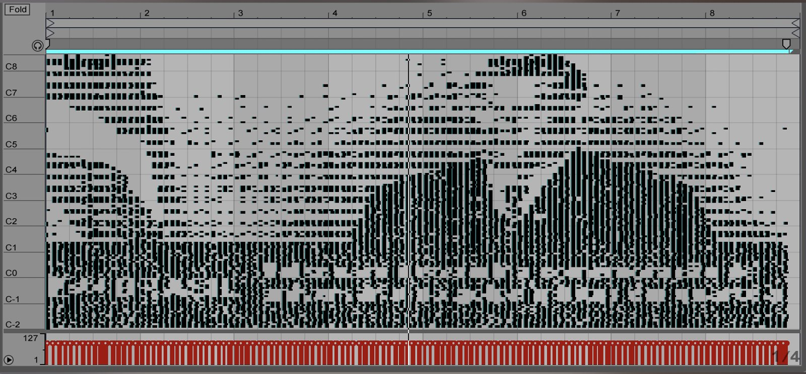
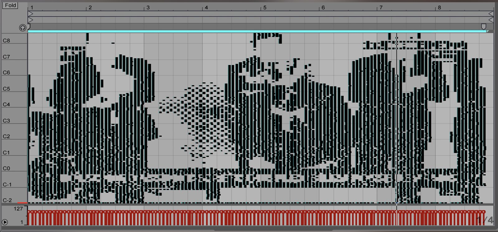
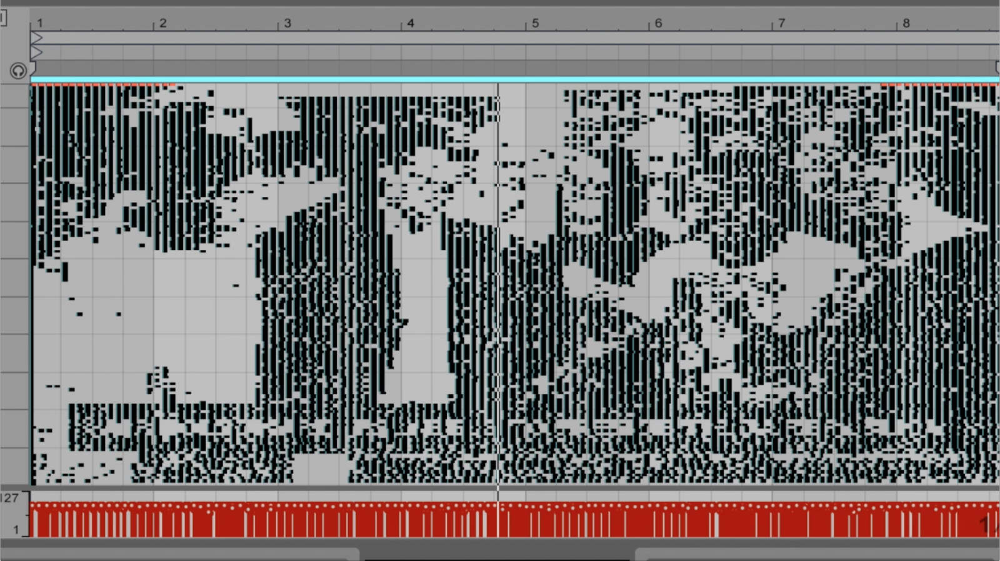

Música Infernal / Hellish Song



2018-2019
Video, 54”
"Jair Bolsonaro é eleito presidente da República", " Bolsonaro assina decreto que facilita a posse de armas", “Bolsonaro determina comemoração de aniversário do golpe militar em quarteis", dizem as legendas de uma série de imagens infernais para o povo brasileiro: a vitória do candidato da extrema direita ao lado de sua devota esposa, seus colegas homens-evangélicos-fascistas e membros de sua equipe governamental, de mãos dadas e em oração; o juiz que prendeu o ex-presidente Lula ao lado de Bolsonaro em apoio à libertação de armas de fogo no Brasil, o porta-voz do governo pedindo que o golpe militar de 1964, que vitimou a presidente Dilma Rousseff entre inúmeros indígenas, camponeses e ativistas ambientais, seja celebrados em todos os quartéis brasileiros. Converti essas imagens em uma partitura midi usando plug-ins disponíveis na internet compartilhados por usuários de um software chamado Ableton Live, para compor o que chamo de Música Infernal, cantada por 3 aves brasileiras extintas: o Gritador-do-Nordeste, o Caburé-de-Pernambuco e o Limpa-Folha-do-Nordeste. Suas vozes foram transformadas em escala musical. As imagens produzem uma composição infernal no horizonte de um piano de cauda e são cantadas pelas vozes espectrais desses pássaros. A degradação humana e ambiental sempre estiveram de mãos dadas. Suporte técnico: Guto Nunes e Sergio Trapani.
“Jair Bolsonaro is elected president of the Republic", "Bolsonaro signs decree that facilitates possession of weapons", "Bolsonaro officially orders that the military celebrate the coup of 64", say the subtitles of a series of hellish images for Brazilian people: the victory of the far right candidate alongside his devout wife, his male-evangelical-fascist colleagues and members of his government team, hand in hand and in prayer; the judge who arrested former President Lula side by side with Bolsonaro in support of the release of firearms in Brazil; the government spokesman calling for the 1964 military coup, that victimized the overthrown president Dilma Rousseff among countless indigenous people, peasants and environmental activists, to be celebrated in all Brazilian barracks. I composed what I call a hellish song: I converted the image into a midi score using available plug-ins shared on the internet by heavy users of a music software called Ableton Live, and made this score be sang by 3 extinct brazilian birds, the Gritador-do-Nordeste, the Caburé-de-Pernambuco and the Limpa-Folha-do-Nordeste, sampling this bird's song on a musical scale. The image produces an infernal composition on the horizon of a grand piano and sung by the spectral voice of the recently extinct bird. Human and environmental degradation are always hand in hand. technical support: Guto Nunes & Sergio Trapani.